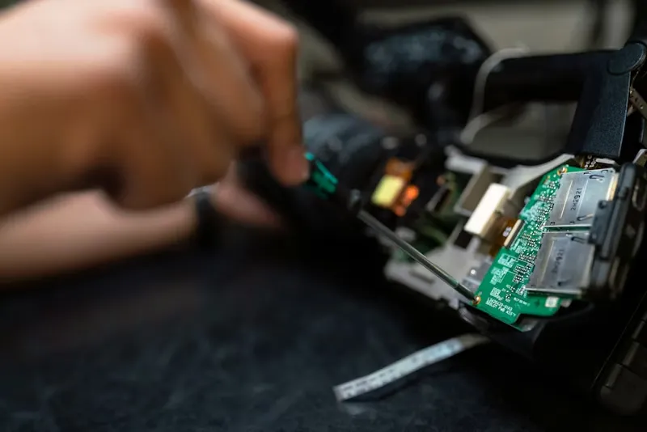
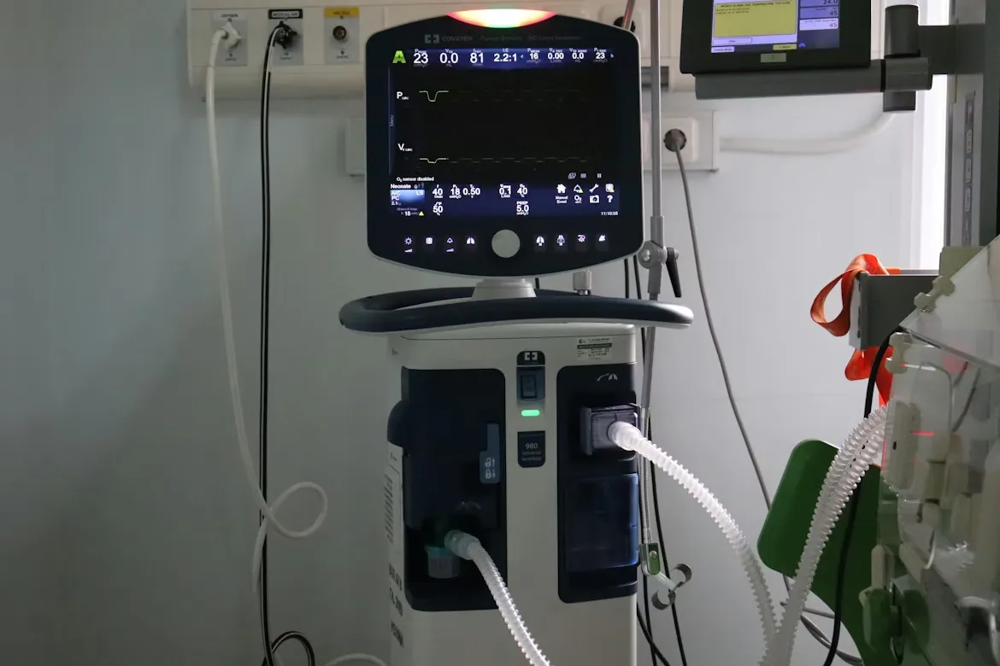

Understanding ISO 13485 Certification for Medical Devices
A complete guide to quality management systems and why ISO certification is essential for medical manufacturers in the global market.
Read More →Establishing Secure Interface with Medical Hub
(123)456-7890
Support@stackly.com
Stay informed with the latest advancements in medical device technology, regulatory updates, and healthcare industry trends.

Explore how intelligent monitoring systems and AI-powered diagnostics are transforming patient care and improving hospital efficiency. From wearable sensors to autonomous surgical assistants, the landscape of clinical care is shifting towards a proactive, data-driven model.
 Dr. Aris Thorne
Dr. Aris Thorne
A complete guide to quality management systems and why ISO certification is essential for medical manufacturers in the global market.
Read More →
Learn how regular servicing reduces downtime and enhances the performance of critical medical equipment in high-pressure environments.
Read More →
Discover the latest advancements in patient monitoring technology designed specifically for critical care and intensive care environments.
Read More →
Our latest respiratory solution combines high-frequency oscillation with AI-driven weaning protocols to improve patient outcomes.
Read More →
How wearable biosensors are enabling continuous cardiac monitoring outside the traditional hospital environment.
Read More →
A deep dive into how our automated diagnostic systems reduced testing turnaround time by 40% in a high-volume facility.
Read More →Examining the role of 3D-printed titanium and polymer scaffolds in orthopedic surgery and long-term device integration.
Read More →
Reducing HAI (Hospital Acquired Infections) through standardized autoclave protocols and post-sterilization handling.
Read More →A step-by-step roadmap for manufacturers to prove substantial equivalence and gain US market entry for Class II devices.
Read More →As IoT becomes standard in healthcare, protecting patient data from vulnerabilities in network-linked hardware is paramount.
Read More →Point-of-care diagnostics just got better with our handheld ultrasound that integrates seamlessly with tablet displays.
Read More →
How deep learning algorithms are helping radiologists flag anomalies in CT scans faster than ever before.
Read More →.webp)
Detailed guide for clinical staff on maintaining dosing accuracy and preventing medication errors in high-risk patients.
Read More →
How a regional cardiology center implemented our real-time telemetry systems to reduce emergency response times.
Read More →Essential information for manufacturers exporting to the EU regarding new technical documentation requirements and EUDAMED.
Read More →Access our comprehensive library of technical documentation and clinical studies designed for healthcare engineers and medical professionals.
Get the latest medical device updates and compliance alerts delivered directly to your inbox.